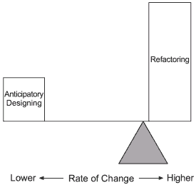
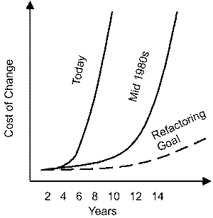

极限编程Extreme
Programming
|

Figure 1 -- Historical lifecycle change costs. 
Figure 2 -- Comtemporary lifecycle change costs. |
The Cost of Change
变化的代价
Early on in Beck's book, he challenges one of the oldest assumptions
in software engineering. From the mid-1970s, structured methods
and then more comprehensive methodologies were sold based on the
"facts" shown in Figure 1. I should know; I developed, taught, sold,
and installed several of these methodologies during the 1980s.
Beck从他的早期的著作开始，就不断向那些软件工程中的一些"古训"发出挑战。从19世纪70年代中期的结构化方法，以至后来的那些更复杂的方法，他们都基于如图1所示的那个"事实"，在整个80年代，我必须了解、使用、讨论、实施这些方法。
Beck asks us to consider that perhaps the economics of Figure 1,
probably valid in the 1970s and 1980s, now look like Figure 2 -
that is, the cost of maintenance, or ongoing change, flattens out
rather than escalates. Actually, whether Figure 2 shows today's
cost profile or not is irrelevant -- we have to make it true! If
Figure 1 remains true, then we are doomed because of today's pace
of change.
Beck却给我们提了一个问题，那些在70年代和80年代也许还能起到效果的方法，他们的经费开销状况（如图1）现在已经发生了变化（如图2），也就是说，维护的成本（也可以等价为不断发生的变化）降低了，而不是越来越高。实际上，图2所示的开销情况在当今是否是事实其实并不重要，重要的是我们必须认识到，如果图1的现象还在继续重演的话，我们只有死路一条，因为当今时代变化实在太快了（也就是说维护的成本将是一个天价）。
The vertical axis in Figure 1 usually depicts the cost of finding
defects late in the development cycle. However, this assumes that
all changes are the results of a mistake -- i.e., a defect. Viewed
from this perspective, traditional methods have concentrated on
"defect prevention" in early lifecycle stages. But in today's environment,
we can't prevent what we don't know about -- changes arise from
iteratively gaining knowledge about the application, not from a
defective process. So, although our practices need to be geared
toward preventing some defects, they must also be geared toward
reducing the cost of continuous change. Actually, as Alistair Cockburn
points out, the high cost of removing defects shown by Figure 1
provides an economic justification for practices like pair programming.
图1中的y轴通常用来表示在开发周期的后期发现错误后需要花费的改错成本。可是，这正验证了一个假设，即后期所有需要做的开动均来自前期的一个错误，比方说一个设计缺陷。从这一点来看，传统方法太依赖于在软件生命周期的早期"不出错"。但是在当今瞬息万变的环境中，我们不能完全预防住那些我们预测不到的东西--即由应用需求不断增长而带来的变化，并且这种变化在早期不可能遇见并加以预防。因此，虽然我们要尽可能在早期做出某些应付变化的预防措施，但是更重要的是我们要减少后期改变所带来的开销。正如
Alistai Cockburn 所指出的，需要高成本的图1所示的那种改正缺陷方法，正好从节省开支的角度给了一些实用的方法（如配对编程）一个好的理由。
In this issue of eAD, I want to restrict the discussion
to change at the project or application level -- decisions about
operating systems, development language, database, middleware, etc.,
are constraints outside the control of the development team. (For
ideas on "architectural" flexibility, see the June and July 1999
issues of ADS.) Let's simplify even further and assume,
for now, that the business and operational requirements are known.
在本期eAD杂志中，我打算把讨论定位于项目或应用软件层次上的变化--对类似操作系统、编程语言、数据库、组件等的讨论不在讨论之列。（关于软件结构的灵活性，可以参考ADS杂志1999年6月的那期）另外，让我们进一步做个简化，即假定软件的用户需求已经确定。
Our design goal is to balance the rapid delivery of functionality
while we also create a design that can be easily modified. Even
within the goal of rapid delivery, there remains another balance:
proceed too hurriedly and bugs creep in; try to anticipate every
eventuality and time flies. However, let's again simplify our problem
and assume we have reached a reasonable balance of design versus
code and test time.
我们的目标是既能快速不断的发布新功能，同时又要让软件的设计易于更改。即使是在快速发布这个目标下，仍然需要在"快速发布但Bug丛生"和"面面俱到但旷日持久"之间进行取舍。因此，让我再简化一下我们要讨论的问题，我们假定我们已经在设计、编码和测试这三者之间取得了合理的平衡。
With all these simplifications, we are left with one question:
how much anticipatory design work do we do? Current design produces
the functionality we have already specified. Anticipatory design
builds in extra facilities with the anticipation that future requirements
will be faster to implement. Anticipatory design trades current
time for future time, under the assumption that a little time now
will save more time later. But under what conditions is that assumption
true? Might it not be faster to redesign later, when we know exactly
what the changes are, rather than guessing now?
在上面这些简化的基础上，还留有一个尾巴：我们在设计时对于未知的未来要看多远？现在的设计已经实现了我们现在想到的一些功能。具有预见性的设计可以使未来的需求更快的获得实现，也就是说预见性设计方法在以现在的时间换取未来的时间，如果一点点现在的时间可以换来未来节约大量时间，当然是划算的。但是这种建设怎么才能成为现实呢？也许未来出了问题就整个重新设计一遍也不慢，那又何必现在瞎猜呢？
This is where refactoring enters the equation. Refactoring, according
to author Martin Fowler, is "the process of changing a software
system in such a way that it does not alter the external behavior
of the code yet improves its internal structure." XP proponents
practice continuous, incremental refactoring as a way to incorporate
change. If changes are continuous, then we'll never get an up-front
design completed. Furthermore, as changes become more unpredictable
-- a great likelihood today -- then much anticipatory design likely
will be wasted.
这就是我们为什么要提出重构的原因。重构，Martin Fowler说过，是不改变软件对外表现但是重整内务的一种改进。XP方法的支持者在变化的环境中实践了连续的、增量式的重构方法。如果变化是不断演化的的，那就不可能存在什么一步到位的设计方法。说白了，如果变化不可预测--正如当今社会的情况--过多的在设计时考虑以后可能的变化，完全是一种浪费。

Figure 3 -- Balancing design and refactoring, pre-internet.  Figure 4 -- Balancing design and refactoring today. |
I think the diagram in Figure 3 depicts the situation prior to
the rapid-paced change of the Internet era. Since the rate of change
(illustrated by the positioning of the balance point in the figure)
was lower, more anticipatory designing versus refactoring may have
been reasonable. As Figure 4 shows, however, as the rate of change
increases, the viability of anticipatory design loses out to refactoring-
- a situation I think defines many systems today.
我认为图3给出的是互联网时代到来之前的情况。由于变化的速度慢（图中由天平的支点比较靠左来表示），早期的预测多一些是合理的。但是在图4中，由于变化速度变快乐，设计时预测太多是得不偿失的，这种情况正是现在许多系统所面临的。
In the long run, the only way to test whether a design is flexible
involves making changes and measuring how easy they are to implement.
One of the biggest problems with the traditional up- front-design-then-maintain
strategy has been that software systems exhibit tremendous entropy;
they degrade over time as maintainers rush fixes, patches, and enhancements
into production. The problem is worse today because of the accelerated
pace of change, but current refactoring approaches aren't the first
to address the problem. Back in the "dark ages" (circa 1986), Dave
Higgins wrote Data Structured Software Maintenance, a book
that addressed the high cost of maintenance, due in large part to
the cumulative effects of changes to systems over time. Although
Higgins advocated a particular program-design approach (the Warnier/Orr
Approach), one of his primary themes was to stop the degradation
of systems over time by systematically redesigning programs during
maintenance activities.
在一个长期项目中，检验一个设计是否具有很好的灵活性是通过变化需求，同时看看原设计能否很容易的实现新变化的需求。这种传统的"先设计，再维护"策略的最大问题在于软件系统存在非常大的熵（极易变化，没有规律）。一个系统随着时间的推移，维护、改错、打补丁、增强功能等工作会使系统的熵越来越大。现在由于外部环境变化加快，情况正越来越糟。不过，现在的重构技术也不是第一个试图解决这个问题的方法。早在所谓的"黑暗时期"（circa
1986），Dave Higgins 就写过一本名为"Data Structured Software Maintenance"的书，该书指出了由于随着时间的推移变化的累计影响不断增大，维护所需要的开销也将越来说庞大，Higgins
提出了一种新的设计方法（the Warnier/Orr Approach）用于阻止系统的熵增大所带来的负面影响，该方法的思想是在维护过程中有系统的对程序进行重新设计。
Higgins's approach to program maintenance was first to develop
a pattern (although the term pattern was not used then) for how
the program "should be" designed, then to create a map from the
"good" pattern to the "spaghetti" code. Programmers would then use
the map to help understand the program and, further, to revise the
program over time to look more like the pattern. Using Higgins's
approach, program maintenance counteracted the natural tendency
of applications to degrade over time. "The objective was not to
rewrite the entire application," said Higgins in a recent conversation,
"but to rewrite those portions for which enhancements had been requested."
Higgins 的方法首先为程序改如何设计设定一种模式（虽然那时还没有模式这个提法），然后在细致的代码设计与"好"的模式之间建立一种映射，程序员即根据这种映射关系来理解系统并修改程序，使修改的结果更接近于那个模式。使用
Higgins 这个方法可以通过维护抵消系统谁时间而熵增大的趋势。Higgins 说："该方法的目标并不是重写整个系统，而只是重写那些根据需要必须增强的部分。"
Although this older-style "refactoring" was not widely practiced,
the ideas are the same as they are today -- the need today is just
greater. Two things enable, or drive, increased levels of refactoring:
one is better languages and tools, and the other is rapid change.
虽然这种原始的"重构"技术并没有被广泛的实践检验，其思想与现在的重构还是相通的，只不过现在的需求变化更快、更大。不过有两个东西驱动、提高了现代的重构技术：一是更好的程序设计语言和开发工具；二是更快的变化需求。
Another approach to high change arose in the early days of RAD:
the idea of throwaway code. The idea was that things were changing
so rapidly that we could just code applications very quickly, then
throw them away and start over when the time for change arose. This
turned out to be a poor long-term strategy.
在早期的 RAD（快速原型开发）方法中还有另一种应付变化的办法：代码抛弃思想。这个思想认为环境和需求变化太快，因此我们唯一的办法只能是快速编写新代码，并且也快速的抛弃老代码。我们认为这不是长久之计。
Refactoring
重构
Refactoring is closely related to factoring, or what is now referred
to as using design patterns. Design Patterns: Elements of Reusable
Object-Oriented Software, by Erich Gamma, Richard Helm, Ralph
Johnson, and John Vlissides, provides the foundational work on design
patterns. Design Patterns serves modern-day OO programmers
much as Larry Constantine and Ed Yourdon's Structural Design
served a previous generation; it provides guidelines for program
structures that are more effective than other program structures.
重构(Refactoring)与构造 (factoring)，或者说与设计模式的使用密切相关。Erich Gamma, Richard
Helm, Ralph Johnson, 和 John Vlissides合著的《 Design Patterns: Elements
of Reusable Object-Oriented 》一书为设计模式做出了奠基性的工作。正如Larry Constantine
和Ed Yourdon 所倡导的结构化设计一样，设计模式对当代的面向对象技术程序设计做出了巨大的贡献，为开发人员带来了福音。通过设计模式，程序的结构的比以往更为有效。
If Figure 4 shows the correct balance of designing versus refactoring
for environments experiencing high rates of change, then the quality
of initial design remains extremely important. Design patterns provide
the means for improving the quality of initial designs by offering
models that have proven effective in the past.
如果图表4 所显示的设计（designing）与重构(refactoring)在面对高速变化环境时的适应能力方面的差别是客观的话，初始设计的质量则显的尤为重要。通过提供过去已被证明是有效的模式，设计模式(Design
patterns)提供了一种提高初始设计质量的方法。
So, you might ask, why a separate refactoring book? Can't we just
use the design patterns in redesign? Yes and no. As all developers
(and their managers) understand, messing with existing code can
be a ticklish proposition. The cliché "if it ain't broke, don't
fix it" lives on in annals of development folklore. However, as
Fowler comments, "The program may not be broken, but it does hurt."
Fear of breaking some part of the code base that's "working" actually
hastens the degradation of that code base. However, Fowler is well
aware of the concern: "Before I do the refactoring, I need to figure
out how to do it safely.... I've written down the safe steps in
the catalog." Fowler's book, Refactoring: Improving the Design
of Existing Code, catalogs not only the before (poor code) and
after (better code based on patterns), but also the steps required
to migrate from one to the other. These migration steps reduce the
chances of introducing defects during the refactoring effort.
现在，也许你会问，为什么还需要一本独立讲重构的书呢？难道我们不可以只使用设计模式来重新设计吗？可以，也不可以。正如所有的开发人员(包括管理者)都知道，修改原有的程序代码是一件棘手的事。development
folklore年刊上有一句话，"if it ain't broke,don't fix it".然而，正如Fowler所提到的，"程序也许还没有'坏掉'，但却造成了潜在的危害."
害怕对那些还能"工作"的代码重新构造实际上只会加剧代码性能的衰退。同时，Fowler也清楚的认识到："在软件重构之前，需要找到安全的做法……我把这些安全的步骤写进了目录"。Fowler所写的<>,不仅编录了如何对以前的（差的）代码和以后的（基于模式设计的较好）的代码进行重构的方法，而且也包含了代码分割重构的步骤。这些步骤减少了在重构过程中出现差错的机会。
Beck describes his "two-hat" approach to refactoring -- namely
that adding new functionality and refactoring are two different
activities. Refactoring, per se, doesn't change the observable behavior
of the software; it enhances the internal structure. When new functionality
needs to be added, the first step is often to refactor in order
to simplify the addition of new functionality. This new functionality
that is proposed, in fact, should provide the impetus to refactor.
Beck用"two-hat"方法来描述重构，也就是说, 添加新的功能与重构是两种不同的行为。在本质上，重构不改变软件可见的外部功能，它只是增强了软件的内部结构。当有新的功能需要添加时，第一步常是对软件进行重构，使添加更简化。事实上，这种添加的新功能为重构提供着推动力。
Refactoring might be thought of as incremental, as opposed to monumental,
redesign. "Without refactoring, the design of the program will decay,"
Fowler writes. "Loss of structure has a cumulative effect." Historically,
our approach to maintenance has been "quick and dirty," so even
in those cases where good initial design work was done, it degraded
over time.
与重量级的再设计相反，重构可以被认为是增量（incremental）式的再设计，"没有重构，程序设计会 腐烂"，Fowler写到,"
结构性的缺陷会带来累积效应 "。历史上，我们对软件维护的方法是"quick and dirty"(快速但不彻底的?)，致使一些初始设计工作做的好的项目，随着时间推移，也会"退化"（degrade）.
| 
Figure 5 -- Software entropy over time. |
Figure 5 shows the impact of neglected refactoring -- at some point,
the cost of enhancements becomes prohibitive because the software
is so shaky. At this point, monumental redesign (or replacement)
becomes the only option, and these are usually high- risk, or at
least high-cost, projects. Figure 5 also shows that while in the
1980s software decay might have taken a decade, the rate of change
today hastens the decay. For example, many client- server applications
hurriedly built in the early 1990s are now more costly to maintain
than mainframe legacy applications built in the 1980s.
图表 5 显示了没有重构时的情况：因为软件是如此的不可靠，升级维护费用变的让人望而却步，于是巨型(monumental)设计(或替换)成了唯一选择，项目的风险，至少是投入上，变的越来越大。图
5也显示，在80年代，软件的生存期大约要10年，而在今天需求的快速变化加剧了软件的腐烂。举个例子，许多90年代初一窝蜂做出来的C/S应用软件在今天比80年代留下来的大型机软件的维护费用还要高的多。
Data Refactoring: Comments by Ken Orr
数据重构: Ken Orr注解
Editor's Note: As I mentioned above, one thing I like about
XP and refactoring proponents is that they are clear about the boundary
conditions for which they consider their ideas applicable. For example,
Fowler has an entire chapter titled "Problems with Refactoring."
Database refactoring tops Fowler's list. Fowler's target, as stated
in the subtitle to his book, is to improve code. So, for data, I
turn to someone who has been thinking about data refactoring for
a long time (although not using that specific term). The following
section on data refactoring was written by Ken Orr.
编者注： 如上所提，XP和重构思想吸引我的一点是他们能够清楚认识到所要考虑实施问题的边界条件(boundary conditions).例如，Fowler写了一章"Problems
with Refactoring".其中首要的问题就是数据库的重构。正如书的副标题所示，Fowler的目标是为了提高代码质量。为此，我咨询了一些在数据重构（或者用其他的术语）方面有较深研究的人。以下关于数据重构部分由Ken
Orr所写。
When Jim asked me to put together something on refactoring, I had
to ask him what that really meant. It seemed to me to come down
to a couple of very simple ideas:
当Jim 要我讲一讲重构时，我问他重构究竟意味着什么。对我来说，把它归纳为以下简单的几点：
- Do what you know how to do.
做你会做的
- Do it quickly.
速战速决
- When changes occur, go back and redesign them in.
当发生变化时，回过头来重新设计
- Go to 1.
回到 1
Over the years, Jim and I have worked together on a variety of
systems methodologies, all of which were consistent with the refactoring
philosophy. Back in the 1970s, we created a methodology built on
data structures. The idea was that if you knew what people wanted,
you could work backward and design a database that would give you
just the data that you needed, and from there you could determine
just what inputs you needed to update the database so that you could
produce the output required.
在过去几年中，Jim和我一起工作，共同研究各种系统方法学(systems methodologies)，发现所有的方法学与重构思想(refactoring
philosophy)有着一致的地方。70年代，我们建立了一种基于数据结构的方法学。其主要思想是：在知道了人们的需求后，逆向工作，设计一个仅含必需数据的数据库，然后再确定更新数据库必需的输入数据，产生需要的输出数据。
Creating systems by working backward from outputs to database to
inputs proved to be a very effective and efficient means of developing
systems. This methodology was developed at about the same time that
relational databases were coming into vogue, and we could show that
our approach would always create a well-behaved, normalized database.
More than that, however, was the idea that approaching systems this
way created minimal systems. In fact, one of our customers actually
used this methodology to rebuild a system that was already in place.
The customer started with the outputs and worked backward to design
a minimal database with minimal input requirements.
从输出结果逆向工程到数据库再到输入来建构系统的方法被证明是一种非常有效和有效率的系统开发方法。几乎在关系数据库开始流行的同时，这种方法也发展了起来。使我们能够建立起运作良好，规范化的数据库。除此之外，这种思想也适用于创建最小系统(minimal
systems).事实上，我们的一个客户在重建一个系统时已经使用了这种方法并取得了成功。该客户从输出入手，通过逆向工程设计了一个满足最小输入需求的最小数据库。
The new system had only about one-third the data elements of the
system it was replacing. This was a major breakthrough. These developers
came to understand that creating minimal systems had enormous advantages:
they were much smaller and therefore much faster to implement, and
they were also easier to understand and change, since everything
had a purpose.
新系统只有老系统三分之一的数据元（data elements ）。这是一个大的突破。开发人员开始逐渐认识到建立最小系统有着巨大的优势：系统更小因而可以更快的实现；功能单一更能适应变化。
Still, building minimal systems goes against the grain of many
analysts and programmers, who pride themselves on thinking ahead
and anticipating future needs, no matter how remote. I think this
attitude stems from the difficulty that programmers have had with
maintenance. Maintaining large systems has been so difficult and
fraught with problems that many analysts and programmers would rather
spend enormous effort at the front end of the systems development
cycle, so they don't have to maintain the system ever again. But
as history shows, this approach of guessing about the future never
works out. No matter how clever we are in thinking ahead, some new,
unanticipated requirement comes up to bite us. (How many people
included Internet-based e-business as one of their top requirements
in systems they were building 10 years ago?)
然而，创建最小系统并不符合许多分析员和程序员们的想法，不管有多遥远，他们总认为自己可以超前思考并预见到未来的需求。我认为这源于软件难于维护的原因。维护一个大的系统是如此的困难并充斥着问题，以致于许多分析员和程序员宁愿在系统开发的前期花费大量的精力来设计一个"完善"的系统，以求一劳永逸。然而事实证明，预测未来是徒劳的。不论我们有多聪明，思想有多超前，总会有一些不曾预料到的需求出现。（有多少人能够在10年前就将基于internet的电子商务作为未来的需求写入自己的软件）
Ultimately, one of the reasons that maintenance is so difficult
revolves around the problem of changing the database design. In
most developers' eyes, once you design a database and start to program
against it, it is almost impossible to change that database design.
In a way, the database design is something like the foundation of
the system: once you have poured concrete for the foundation, there
is almost no way you can go back and change it. As it turns out,
major changes to databases in large systems happen very infrequently,
only when they are unavoidable. People simply do not think about
redesigning a database as a normal part of systems maintenance,
and, as a consequence, major changes are often unbelievably difficult.
最后，维护如此困难的原因之一在于，当改变数据库设计时，其他的问题都会接踵而来。在大多数开发人员看来，一旦设计好数据库并在此基础上开始了编码以后，再去改变数据库的设计几乎是不可能的。在某种程度上，设计数据库就好比建造系统的地基：一旦你把混凝土灌了进去，你就没办法再去改变它。因此，除非不可避免，大型系统中的数据库极少会发生大的改动。人们不能把重新设计数据库仅仅当成系统维护的普通一部分。否则的话，对系统进行大的改动会变的难以想象的困难。
Enter Data Refactoring
进入数据重构
Jim and I had never been persuaded by the argument that the database
design could never be changed once installed. We had the idea that
if you wanted to have a minimal system, then it was necessary to
take changes or new requirements to the system and repeat the basic
system cycle over again, reintegrating these new requirements with
the original requirements to create a new system. You could say
that what we were doing was data refactoring, although we never
called it that.
Jim和我永远都不会承认一旦系统开始运行就不能再改变数据库设计的观点.我们认为,如果你想使系统保持最精简的状态,就必须要把所要做的变化或新的功能引入到系统中并重复基本的开发过程,使新的需求和旧的需求融合在一起而成为一个新的系统.你可能会说我们所作的就是数据重构,可我们从来不那么说.
The advantages of this approach turned out to be significant. For
one thing, there was no major difference between development of
a new system and the maintenance or major modification of an existing
one. This meant that training and project management could be simplified
considerably. It also meant that our systems tended not to degrade
over time, since we "built in" changes rather than "adding them
on" to the existing system.
这么做的好处是显而易见的.首先,开发一个新系统和维护或对旧系统统进行较大改造的区别并不是很大.这就意味着管理一个项目和培训工作将大大减少.同时,也将减少开发时间,这是因为我们对变化的处理方式不同，一个是'built
in'(建立在变化之上),另一个是'adding them on'(添加变化)。
Over a period of years, we built a methodology (Data Structured
Systems Development or Warnier/Orr) and trained thousands of systems
analysts and programmers. The process that we developed was largely
manual, although we thought that if we built a detailed-enough methodology,
it should be possible to automate large pieces of that methodology
in CASE tools.
在过去的几年里，我们建立了一种方法（结构化系统设计方法或Warnier-Orr法）并且培训了数以千计的系统分析员和编程人员。即便我们在定义了足够详细的各种说明后有可能用CASE工具实现大部分工作，但开发过程仍需要大量的手工工作。
Automating Data Refactoring
自动化的数据重构
To make the story short, a group of systems developers in South
America finally accomplished the automation of our data refactoring
approach in the late 1980s. A company led by Breogán Gonda and Nicolás
Jodal created a tool called GeneXus1 that
accomplished what we had conceived in the 1970s. They created an
approach in which you could enter data structures for input screens;
with those data structures, GeneXus automatically designed a normalized
database and generated the code to navigate, update, and report
against that database.
为了缩短开发时间，南美的一组系统开发人员在80年代年开发出了数据重构自动化工具。由Breogán Gonda 和 Nicolás
Jodal领导的公司开发了一种名叫GeneXus的工具，这正是我们在70年代所构想要的。他们创建的方法使我们在输入数据结构以后，系统能够自动为你创建规范的数据库并产生浏览、更新和输出数据的代码。
But that was the easy part. They designed their tool in such a
way that when requirements changed or users came up with something
new or different, they could restate their requirements, rerun (recompile),
and GeneXus would redesign the database, convert the previous database
automatically to the new design, and then regenerate just those
programs that were affected by the changes in the database design.
They created a closed-loop refactoring cycle based on data requirements.
这就使事情简单了，这种工具使得当用户的需求或系统的要求改变后只需要修改原有的定义，重新编译，就能够重新设计数据库以适应新的需求，并产生仅仅受数据库修改影响而需要改变的代码。这就是基于数据的闭环的重构过程。
GeneXus showed us what was really possible using a refactoring
framework. For the first time in my experience, developers were
freed from having to worry about future requirements. It allowed
them to define just what they knew and then rapidly build a system
that did just what they had defined. Then, when (not if) the requirements
changed, they could simply reenter those changes, recompile the
system, and they had a new, completely integrated, minimal system
that incorporated the new requirements.
GeneXus使我们认识到重构能构给我们带来的真正的东西。就我的经验而言，这使开发人员从对未来需求的担忧中解脱出来，从而能够使开发人员仅仅定义他们所知道的并快速的实现所定义的所有内容。因此，当系统的需求更改以后，他们只须简单的加入那些修改，重新编译，就可以得到一个新的、完全集成的、满足新的需求的最小系统。
What Does All This Mean?
所有的这一切意味着什么？
Refactoring is becoming something of a buzzword. And like all buzzwords,
there is some good news and some bad news. The good news is that,
when implemented correctly, refactoring makes it possible for us
to build very robust systems very rapidly. The bad news is that
we have to rethink how we go about developing systems. Many of our
most cherished project management and development strategies need
to be rethought. We have to become very conscious of interactive,
incremental design. We have to be much more willing to prototype
our way to success and to use tools that will do complex parts of
the systems development process (database design and code generation)
for us.
重构正在逐渐变成一个时髦的词语。与所有的时髦的东西一样，既有好的一面，也有坏的一面。好的一面是：如果能够正确的实施，重构使我们有可能快速构建健壮的系统。坏的一方面是：我们不得不重新考虑如何进行开发。原先采用的所有开发和管理策略需要重新考虑。我们必须了解交互式的、增量的开发方法；我们还必须习惯于使我们能够成功的模式化的开发方法和使用工具来完成系统开发工作中那些复杂的工作（数据库设计和代码生成）。
In the 1980s, CASE was a technology that was somehow going to revolutionize
programming. In the 1990s, objects and OO development were going
to do the same. Neither of these technologies lived up to their
early expectations. But today, tools like GeneXus really do many
of the things that the system gurus of the 1980s anticipated. It
is possible, currently, to take a set of requirements, automatically
design a database from those requirements, generate an operational
database from among the number of commercially available relational
databases (Oracle, DB2, Informix, MS SQL Server, and Access), and
generate code (prototype and production) that will navigate, update,
and report against those databases in a variety of different languages
(COBOL, RPG, C, C++, and Java). Moreover, it will do this at very
high speed.
80年代，CASE使开发产生革命性的变化。90年代，对象和OO方法也使开发产生革命性的变化。这些技术都没有像达到期望的效果。但现在，像GeneXus这样的工具切切实实的做到了80年代人们所期望的东西。确实有可能在给定系统需求后自动进行数据库设计，生成一种实际工作的商用关系型数据库（Oracle,
DB2, Informix, MS SQL Server, and Access），并产生能够浏览、更新和输出数据库中数据的不同语言（COBOL,
RPG, C, C++, and Java）的代码（原型和结果）。
This new approach to systems development allows us to spend much
more time with users, exploring their requirements and giving them
user interface choices that were never possible when we were building
things at arm's length. But not everybody appreciates this new world.
For one thing, it takes a great deal of the mystery out of the process.
For another, it puts much more stress on rapid development.
新的系统开发方法能够使我们有更多的时间和用户交流，分析用户的需求，让用户选择不同的交互界面，这在只凭自己来完成所有事情的时侯是不可能的。但是并不是所有人都喜欢这一开发方法。一个是因为这将很大程度上拨开开发过程的神秘面纱。另一个是因为这也给快速开发增加了压力。
When people tell you that building simple, minimal systems is out
of date in this Internet age, tell them that the Internet is all
about speed and service. Tell them that refactoring is not just
the best way to build the kind of systems that we need for
the 21st century, it is the only way.
当人们告诉你在Internet时代已经不可能再建立简单、精简的系统的时侯，那么告诉他们Internet是速度和服务的天下，告诉他们重构不仅仅是在21世纪建立这样系统的最好方法，也是唯一的方法。
NOTES
1Gonda and Jodal created a company called ARTech to market the GeneXus product. It currently has more than 3,000 customers worldwide and is marketed in the US by GeneXus, Inc.
Crystal Light Methods: Comments by Alistair Cockburn
轻量级的Crystal方法
Editor's note: In the early 1990s, Alistair Cockburn was hired
by the IBM Consulting Group to construct and document a methodology
for OO development. IBM had no preferences as to what the answer
might look like, just that it work. Cockburn's approach to the assignment
was to interview as many project team members as possible, writing
down whatever the teams said was important to their success (or
failure). The results were surprising. The remainder of this section
was written by Cockburn and is based on his "in-process" book on
minimal methodologies.
编者注：在九十年代早期，Alistair Cockburn IBM顾问组工作时，为OO（面向对象）的开发制订了一套工作方法。IBM认为不管白猫黑猫，抓的到老鼠就是好猫。Cockburn
深入接触许多开发小组，写下了他们认为导致项目成功或者失败的关键之处。结果让人大吃一惊。以下内容是由 Cockburn写的，基于他的含有极少方法论的"实战工作"书
。
In the IBM study, team after successful team "apologized" for not
following a formal process, for not using a high-tech CASE tool,
for "merely" sitting close to each other and discussing as they
went. Meanwhile, a number of failing teams puzzled over why they
failed despite using a formal process - maybe they hadn't followed
it well enough? I finally started encountering teams who asserted
that they succeeded exactly because they did not get caught up in
fancy processes and deliverables, but instead sat close together
so they could talk easily and delivered tested software frequently.
在IBM的研究组里，开发小组要向以前成功的小组"道歉"，因为他们没有遵守一道正式的工序， 因为他们没有用一个高科技的CASE工具，又或者"仅仅"因为他们坐在一起，讨论他们下步
该怎么做。 同时，一些失败的小组觉得非常迷惑，尽管他们使用了正式的工序，他们还是 失败了--也许是遵守这些工序还遵守的不够好？后来我开始碰到一些成功的小组，他们宣称
正是因为没有陷于花里胡哨的过程和可发布性，而是大家坐在一起，从而使得他们可以 更容易的加以讨论并且经常交换测试后的软件，最终才得以成功。
These results have been consistent, from 1991 to 1999, from Hong
Kong to the Americas, Norway, and South Africa, in COBOL, Smalltalk,
Java, Visual Basic, Sapiens, and Synon. The shortest statement of
the results are:
这些结论从 1991 到 1999，从香港到美国, 挪威, 和南非,在COBOL, Smalltalk, Java, Visual
Basic, Sapiens, 和 Synon都是一贯坚持 , 这些结论的最短描述是：
To the extent you can replace written documentation with face-to-face interactions, you can reduce reliance on written work products and improve the likelihood of delivering the system.
尽可能在你的范围内，用面对面的沟通来代替写文档，从而可以减少对写好了的工作产品的依赖，并 增大发布系统的可能性The more frequently you can deliver running, tested slices of the system, the more you can reduce reliance on written "promissory" notes and improve the likelihood of delivering the system.
越是经常发布正在运行着并且经过测试的系统片段，就越能让你减少对写好的"约定"标记的依赖，越能增大最终发布系统的可能性
People are communicating beings. Even introverted programmers do
better with informal, face-to-face communication than with paper
documents. From a cost and time perspective, writing takes longer
and is less communicative than discussing at the whiteboard.
应当以人性的方式加以沟通。即使是对内向的程序员来说，采用不拘礼节的面对面的交流，都比采用写在纸上的文档进行沟通效果要好。从成本和时间上来看，写文章总比在白板上讨论耗费更多的时间，而且沟通的效果也更差。
Written, reviewed requirements and design documents are "promises"
for what will be built, serving as timed progress markers. There
are times when creating them is good. However, a more accurate timed
progress marker is running tested code. It is more accurate because
it is not a timed promise, it is a timed accomplishment.
那些写好的而且评审过的需求和设计文档，只是"承诺"了要做什么，我们可以将其作为项目进度的标志 使用。有很多进度标志在最初设立时是好的。然而，更准确的进度标志应该是运行测试后的代码。因为这不是预先承诺的标志，而是真正完成的标志。
Recently, a bank's IT group decided to take the above results at
face value. They began a small project by simply putting three
people into the same room and more or less leaving them alone.
Surprisingly (to them), the team delivered the system in a fine,
timely manner. The bank management team was a bit bemused. Surely
it can't be this simple?
最近，一个银行的IT部决定小试一下以上结果。他们启动一个小项目，使用简单的把三个人放在一个房间里的方法，让他们自生自灭。令人惊奇的是，这个小组及时的、优秀的发布了系统。银行的管理层觉得有点困惑。一定不会这么简单的吧？
It isn't quite so simple. Another result of all those project interviews
was that: different projects have different needs. Terribly obvious,
except (somehow) to methodologists. Sure, if your project only needs
3 to 6 people, just put them into a room together. But if you have
45 or 100 people, that won't work. If you have to pass Food &
Drug Administration process scrutiny, you can't get away with this.
If you are going to shoot me to Mars in a rocket, I'll ask you not
to try it. We must remember factors such as team size and demands
on the project, such as:
当然不是如此简单。另外一个采访了所有其他项目后得到的结论是：不同项目有不同的需要。这是非常明显的不依赖于方法论的（不知道怎的）。当然，如果你的项目只需要3到6个人，只要让他们在一个房间里就可以了。但如果你有45或者100个人，这就没用了。如果你要通过食物药品管理部门的过程检验，你就不能这样开始。如果你想把我用火箭发射到火星上去，我建议千万不要尝试。我们必须记住团队的大小和项目的需求这类因数：
- As the number of people involved grows, so does the need to
coordinate communications.
随着参与人数的增长，协调沟通的需求也更多
- As the potential for damage increases, the need for public scrutiny
increases, and the tolerance for personal stylistic variations
decreases.
随潜在的破坏性的增长，对于公开检查的要求也在不断增加，而同时对由于个人风格的不同所导致差异的可容忍程度也在降低
- Some projects depend on time-to-market and can tolerate defects
(Web browsers being an example); other projects aim for traceability
or legal liability protection.
一些项目依赖市场方面所确定的发布时间，而且对于一些缺陷能加以容忍（WEB浏览器就是这样一个例子）；其他的一些 项目致力于条理性和法律责任。
The result of collecting those factors is shown in Figure 6. The
figure shows three factors that influence the selection of methodology:
communications load (as given by staff size), system criticality,
and project priorities.
根据收集到的有关因素总结出的结论如图Figure 6所示。它显示了影响选择不同方法论的三个因数：沟通难度（由成员的数量决定），系统关键程序，以及项目的优先级。
Figure 6 -- The family of Crystal methods.
Locate the segment of the X axis for the staff size (typically
just the development team). For a distributed development project,
move right one box to account for the loss of face-to-face communications.
根据成员数量确定在X轴上的部分（通常的只是开发组）。如果是一个分布的开发项目，因为面对面沟通的机会减少，向右移动一格。
On the Y axis, identify the damage effect of the system: loss of
comfort, loss of "discretionary" monies, loss of "essential" monies
(e.g., going bankrupt), or loss of life.
在Y轴上，确认系统损坏的影响：舒适程度下降，明显的经济损失，根本性的经济损失（比如破产），或者丧命。
The different planes behind the top layer reflect the different
possible project priorities, whether it is time to market at all
costs (such as in the first layer), productivity and tolerance (the
hidden second layer), or legal liability (the hidden third layer).
The box in the grid indicates the class of projects (for example,
C6) with similar communications load and safety needs and can be
used to select a methodology.
在顶层的不同的飞机（板块panel？）反映了各种项目的不同重点，所耗费的是否是上市时间（就象在第一层），效率和兼容性(隐藏的第二层)，或者法律责任（隐藏的第三层）.网格中的格子决定了在相似沟通难度和安全需求下的项目的类型（例如C6），你可以用来选择方法论。
The grid characterizes projects fairly objectively, useful for
choosing a methodology. I have used it myself to change methodologies
on a project as it shifted in size and complexity. There are, of
course, many other factors, but these three determine methodology
selection quite well.
这个网格显示了项目的特性，对选择一个方法论很有用。我自己在项目的大小和复杂程度改变的时候，用来改变我的方法论。当然还有其他的因素，但这三个用来决定选择什么方法论是很好的。
Suppose it is time to choose a methodology for the project. To
benefit from the project interviews mentioned earlier, create the
lightest methodology you can even imagine working for the cell in
the grid, one in which person-to-person communication is enhanced
as much as possible, and running tested code is the basic timing
marker. The result is a light, habitable (meaning rather pleasant,
as opposed to oppressive), effective methodology. Assign
this methodology to C6 on the grid.
假定现在要选择项目的方法论。得益于上面所提到的对有关项目的访谈，你可以把建立一个最轻量级的方法论，想象成按照网格中的格子工作，在这里，尽量提高人和人之间的交流，运行测试后的代码是最基本的进度标志。结果是一个简单的，符合人的习惯的（意味着更让人愉快的，反对压抑人的）高效率的方法论。在网格上指定这个方法论到C6。
Repeating this for all the boxes produces a family of lightweight
methods, related by their reliance on people, communication, and
frequent delivery of running code. I call this family the Crystal
Light family of methodologies. The family is segmented into vertical
stripes by color (not shown in figure): The methodology for 2-6
person projects is Crystal Clear, for 6-20 person projects is Crystal
Yellow, for 20-40 person projects is Crystal Orange, then Red, Magenta,
Blue, etc.
重复这些所有的格子，产生一个轻量级的方法的家族，根据他们对人们的信心，沟通，和发布运行代码的频率。我叫这个家族为Crystal
Light方法论族。这个家族用颜色（在图上没画）分成不同的竖直的条纹：2-6个人的项目的方法论叫 Crystal Clear ，6-20人的项目的方法论叫
Crystal Yellow , 20-40人的项目的方法论叫 Crystal Orange,然后是 Red，Magenta，Blue，等等。
Shifts in the vertical axis can be thought of as "hardening" of
the methodology. A life-critical 2-6-person project would use "hardened"
Crystal Clear, and so on. What surprises me is that the project
interviews are showing rather little difference in the hardness
requirement, up to life-critical projects.
垂直方向间的切换在方法学上被称为强化。一个短生命期的2到6个人的项目应该使用强化了的Crystal Clear或其派生方法来管理。使我惊喜的是，在这样的
项目中几乎看不到增加需求和按时完成项目之间的矛盾。
Crystal Clear is documented in a forthcoming book, currently in
draft form on the Web. Crystal Orange is outlined in the methodology
chapter of Surviving Object-Oriented Projects (see Editor's
note below).
Crystal Clear出自一本即将出版的书，现在网上已经有草稿。在《Surviving Object-Oriented
Projects》一书的方法论一章中描述了Crystal Orange的轮廓。
Having worked with the Crystal Light methods for several years
now, I found a few more surprises.
在采用Crystal Light方法多年以后，现在我发现了更多的惊喜。
The first surprise is just how little process and control a team
actually needs to thrive (this is thrive, not merely survive).
It seems that most people are interested in being good citizens
and in producing a quality product, and they use their native cognitive
and communications abilities to accomplish this. This matches Jim's
conclusions about adaptive software development (see Resources and
References, page 15). You need one notch less control than you expect,
and less is better when it comes to delivering quickly.
第一个惊喜是，一个开发队伍成功（不仅仅是幸存）并不需要太多的管理和控制。大部分开发人员都乐于专心工作和写出好的软件，他们会使用自己的理解能力和沟通能力去
完成这一切。这和Jim做出的关于自适应软件开发的结论完全一致(参见"资源和参考"，第15页)。你需要比你预计的要少得多的控制，尤其是当你希望能尽快发布软件时，越
少就越好。
More specifically, when Jim and I traded notes on project management,
we found we had both observed a critical success element of project
management: that team members understand and communicate
their work dependencies. They can do this in lots of simple, low-tech,
low-overhead ways. It is often not necessary to introduce tool-intensive
work products to manage it.
更特别的是，当我和Jim交换项目管理的心得时，我们意识到我们都观察到了成功的项目管理中的一个关键要素：开发人员能理解有关人员的工作并加以沟通。他们能通过
许多简单、低技术含量并且廉价的方法完成这一切。通常这并不需要引入什么特别的工具来管理。
Oh, but it is necessary to introduce two more things into the project:
trust and communication.
不过项目中还是需要两个关键要素：信任和沟通。
A project that is short on trust is in trouble in more substantial
ways than just the weight of the methodology. To the extent that
you can enhance trust and communication, you can reap the benefits
of Crystal Clear, XP, and the other lightweight methods.
在一个项目中，缺乏信任比选择了错误的方法学更要命。从某种程度上讲，只要你能加强信任和沟通，你就一定能受益于Crystal Clear，XP（极限编程
？）或别的轻量级开发方法。
The second surprise with defining the Crystal Light methods was
XP. I had designed Crystal Clear to be the least bureaucratic methodology
I could imagine. Then XP showed up in the same place on the grid
and made Clear look heavy! What was going on?
第二个惊喜是当我们定义Cystal Light方法的时候它就和XP一致了。我把Crystal Clear设计成我所能想象的最不官僚的方法学。随后XP在
同一领域出现并展露锋芒，在它面前Clear仿佛成了重量级的开发方法！这是怎么一回事？
It turns out that Beck had found another knob to twist on the methodology
control panel: discipline. To the extent that a team can increase
its internal discipline and consistency of action, it can lighten
its methodology even more. The Crystal Light family is predicated
on allowing developers the maximum individual preference. XP is
predicated on having everyone follow tight, disciplined practices:
这大概是因为Beck发现了方法学的控制面板上的另一个开关：纪律。在某种程度，如果一个开发小组能增强内部的纪律性并保证行动的一致性，方法学可以变得更加
轻巧。Crystal Light衍生的方法学给予开发者最多的个性化。XP则要求每个人都遵守严格的有纪律的实践：
- Everyone follows a tight coding standard.
每个人都必须遵守一个严格的编码标准。
- The team forms a consensus on what is "better" code, so that
changes converge and don't just bounce around.
关于什么是好的代码, 开发小组在此方面应达成共识，这样所有的变化都集中在一起，避免了反复。
- Unit tests exist for all functions, and they always pass at
100%.
每个函数都必须经过单元测试，并且必须100%通过。
- All production code is written by two people working together.
所有产品的代码都是由两名开发人员一起工作完成的
- Tested function is delivered frequently, in the two- to four-
week range.
以每两周到四周为一个周期, 频繁地发布那些经过测试的函数，。
In other words, Crystal Clear illustrates and XP magnifies the
core principle of light methods:
换一句话说，Crystal Clear展示了轻量级方法的核心法则，而XP放大了它：
Intermediate work products can be reduced and project delivery enhanced, to the extent that team communications are improved and frequency of delivery increased.
在一定程度上，如果开发队伍的交流得到了改善，发布的频率得到提高，那么就可以减少中间产品的工作量，从而能更快地完成项目。
XP and Crystal Clear are related to each other in these ways:
XP和Crystal Clear有如下关联：
- XP pursues greater productivity through increased discipline,
but it is harder for a team to follow.
XP通过增强纪律性提高生产效率，但是它对于开发者更难于遵守。
- Crystal Clear permits greater individuality within the team
and more relaxed work habits in exchange for some loss in productivity.
Crystal Clear给予开发者更多的个性空间，允许比较松散的工作习惯，但是同时损失了一些生产效率。
- Crystal Clear may be easier for a team to adopt, but XP produces
better results if the team can follow it.
开发队伍可以比较轻松地使用Crystal Clear方法，但是如果能够有效地使用XP，效果会更好。
- A team can start with Crystal Clear and move itself to XP. A
team that falls off XP can back up to Crystal Clear.
开发队伍可以从Crystal Clear开始，然后转移到XP方法。开发队伍也可以放弃XP，重新使用Crystal Clear。
Although there are differences in Crystal Clear and XP, the fundamental
values are consistent -- simplicity, communications, and minimal
formality.
尽管Crystal Clear和Xp之间存在很多差异，但是它们的基本价值观是一致的--简单、交流和尽量减少形式化。
Editor's note: For more information on the Crystal Clear methodology,
see Alistair Cockburn's Web site, listed in the References and Resources
section. For more information on Crystal Orange, it is covered in
the book Surviving Object-Oriented Projects, also listed
in the References and Resources section.
编者按：如果你想深入了解Crystal Clear，请看"相关资源与引用"部分列出的Alistair Cockburn的网站，在。如果你想深入了解
Crystal Orange，你可以参阅《Surviving Object-Oriented Projects》一书，同样有关信息在"相关资源与引用"部分也已列出。
Conclusions: Going to Extremes
结论：走向极限
Orr and Cockburn each describe their approaches and experience
with lighter methodologies. But earlier, in describing Chrysler's
C3 project, I alluded to the difficulty in extending the use of
approaches like XP or even RAD. In every survey we have done of
eAD subscribers, and every survey conducted of software
organizations in general, respondents rate reducing delivery time
as a critical initiative. But it is not just initial delivery that
is critical. Although Amazon.com may have garnered an advantage
by its early entry in the online bookstore market, it has maintained
leadership by continuous adaptation to market conditions -- which
means continuous changes to software.
Orr 和 Cockburn 都描述了他们的轻量级方法和经验。但在前面描述Chrysler的 C3 项目时，我间接的提到，扩展使用类似XP或者甚至是RAD的方法都存在着困难。在我们
对eAD的订阅者所做的所有调查以及所有软件组织的行为调查中，一般说来，快速的响应 速度，减少发布时间是一个关键的开始。但这并不是说只有首次发布才是关键的。虽然
Amazon.com 因为更早进入网上书店市场而拥有优势，但它为了维持它的领导地位，必须 持续不断的适应市场条件----这意味着软件的持续更改。
Deliver quickly. Change quickly. Change often. These three driving
forces, in addition to better software tools, compel us to rethink
traditional software engineering practices -- not abandon the practices,
but rethink them. XP, for example, doesn't ask us to abandon good
software engineering practices. It does, however, ask us to consider
closely the absolute minimum set of practices that enable a small,
co-located team to function effectively in today's software delivery
environment.
快速发布.快速修改.频繁变更.通过这三者的驱动，加上更好的软件工具，迫使我们重新 思考传统的软件工程实践----并不是放弃它们，而是对其重新加以思考。例如，XP
并没有 要我们抛弃好的软件工程实践。相反，它要求我们去深入地思考，在 当今软件发布环境下，小型协作团队能够高效运作所需的最低环境要求有哪些。
Cockburn made the observation that implementation of XP (at least
as Beck and Jeffries define it) requires three key environmental
features: inexpensive inter-face changes, close communications,
and automated regression testing. Rather than asking "How do I reduce
the cost of change?" XP, in effect, postulates a low-change cost
environment and then says, "This is how we will work." For example,
rather than experience the delays of a traditional relational database
environment (and dealing with multiple outside groups), the C3 project
used GemStone, an OO database.
Cockburn 观察发现，XP（至少按照Beck和Jeffries所定义的那样）的实现至少需要三个 环境特征：界面修改不会带来昂贵的的代价，更密切的交流和自动的回归测试。实际上
XP 不是问"我该如何降低变更带来的成本"，而是要求一个低更改成本的环境，然后说"我们将这样工作"。例如， C3项目使用面向对象数据库GemStone，而不是去使用传统关系数据库（以及
和多个外部组打交道）。
Some might argue that this approach is cheating, but that is the
point. For example, Southwest Airlines created a powerhouse by reducing
costs -- using a single type of aircraft (Boeing 737s). If turbulence
and change are the norm, then perhaps the right question may be:
how do we create an environment in which the cost (and time) of
change is minimized? Southwest got to expand without an inventory
of "legacy" airplanes, so its answer might be different than American
Airline's answer, but the question remains an important one.
有些人也许会说这种方法是欺骗，确实如此。例如，西南航空公司在创建动力室时，使用 同一种类型的飞机（波音737）来降低成本。如果湍流和改变都是标准的，那么正确
的问题可能就是：我们如何创建一个导致最低变更成本（和时间）的环境？西南航空公司在扩 张时，没有遗留的飞机存货。对于美国航空公司来说，这个问题的答案也许会不同，但是
它仍然是个重要的问题。
There are five key ideas to take away from this discussion of XP
and light methods:
在这个关于XP和轻量方法的讨论中，我们能得到如下五个主要观点：
- For projects that must be managed in high-speed, high-change
environments, we need to reexamine software development practices
and the assumptions behind them.
对于那些处于飞速变化环境中的项目而言，我们需要重新检视有关的软件开发实践以及与之对应的有关假定。
- Practices such as refactoring, simplicity, and collaboration
(pair programming, metaphor, collective ownership) prompt us to
think in new ways.
类似于重构、简单化和合作（配对编程，隐喻，代码共享）等实践促使我们以一种新思路来思考。
- We need to rethink both how to reduce the cost of change in
our existing environments and how to create new environments that
minimize the cost of change.
我们不仅需要重新思考如何在现有环境中降低变更导致的成本，而且还需要重新考虑如何创造一个新的环境, 从而能够将变更成本降到最低。
- In times of high change, the ability to refactor code, data,
and whole applications becomes a critical skill.
在频繁变动中，对代码, 数据以及整个应用重构的能力将会成为一项关键的技能。
- Matching methods to the project, relying on people first and
documentation later, and minimizing formality are methods geared
to change and speed.
将方法应用到项目中去时，先依赖人，再依赖文档，尽量减少形式化的东西，从而有效地将方法与项目相结合
Editor's Musings
编者的沉思（编后语）
Extreme rules! In the middle of writing this issue, I received
the 20 December issue of BusinessWeek magazine, which contains
the cover story, "Xtreme Retailing," about "brick" stores fighting
back against their "click" cousins. If we can have extreme retailing,
why not Extreme Programming?
极端的规则。在写这篇文章的过程中，我曾经收到12月20日发行的商业周刊杂志。其中有 一个封面故事，"极端零售"，关于"brick"商店反击它们的堂兄弟"click"。如果我们可以
有极端零售，为什么不极端编程呢。
Refactoring, design patterns, comprehensive unit testing, pair
programming -- these are not the tools of hackers. These are the
tools of developers who are exploring new ways to meet the difficult
goals of rapid product delivery, low defect levels, and flexibility.
Writing about quality, Beck says, "The only possible values are
'excellent' and 'insanely excellent,' depending on whether lives
are at stake or not" and "runs the tests until they pass (100% correct)."
You might accuse XP practitioners of being delusional, but not of
being poor-quality-oriented hackers.
重构，设计模式，对单元测试的充分理解，配对编程----这些都不是黑客们的工具。它们是开发者 们为了解决产品快速发布，同时又能保持较少的缺陷和灵活性时探索出的新方法。关于质量，Beck说，"只有两种情况下是有价值的：'优秀'或者'极其优秀'，这取决于其对软件产品生存的影响程度"，以及
"执行测试直到它们通过（100％正确）"。你也许可以指责XP的实践者是受到了蒙蔽，但是他们决不是那种不重视质量的黑客。
To traditional methodology proponents, reducing time-to-market
is considered the enemy of quality. However, I've seen some very
slow development efforts produce some very poor-quality software,
just as I've seen speedy efforts produce poor-quality software.
Although there is obviously some relationship between time and quality,
I think it is a much more complicated relationship than we would
like to think.
对于传统方法的支持者来说，缩短发布时间是质量的敌人。然而，我看过一些开发速度 很慢而且质量非常差的软件，就象我看过的另一些开发速度很快但质量低下的软件一样。虽然在时间
和质量间存在一些明显的联系，但我认为这个联系比我们一般所想象的要的复杂的多。
Traditional methodologies were developed to build software in environments
characterized by low to moderate levels of change and reasonably
predictable desired outcomes. However, the business world is no
longer very predictable, and software requirements change at rates
that swamp traditional methods. "The bureaucracy and inflexibility
of organizations like the Software Engineering Institute and practices
such as CMM are making them less and less relevant to today's software
development issues," remarks Bob Charette, who originated the practices
of lean development for software.
传统方法可用于开发那些变化程度不大并可预期最终结果的软件.然而，商业世界却是变化莫测的，并且传统开发方法已无法满现在的快速变化软件需求的要求。轻量级软件开发实践的创始人Bob
Charette认为"由于软件工程研究所(SEI)这样组织的官僚化、顽固性，以及诸如CMM的实践，使得他们日益脱离当今的软件开发。
As Beck points out in the introduction to his book, the individual
practices of XP are drawn from well-known, well-tested, traditional
practices. The principles driving the use of these practices, along
with the integrative nature of using a specific minimal set of practices,
make XP a novel solution to modern software development problems.
就象Beck在他书中所写的简介中指出的一样，XP中的各个独立实践，都是从著名的，经过很好的测试 的，传统实践中抽取出来的。这些原则驱动着实践的使用，与一个特别的实践最小集自然的一
体化在一起，使得XP成为一个解决现代软件开发问题的新方案。
But I must end with a cautionary note. None of these new practices
has much history. Their successes are anecdotal, rather than studied
and measured. Nevertheless, I firmly believe that our turbulent
e-business economy requires us to revisit how we develop and manage
software delivery. While new, these approaches offer alternatives
well worth considering.
但是我必须以一条警告来做结束语。所有的这些新实践都没有很长的历史，它们的成功就象 逸事一样，没有被加以研究和度量。然而我坚信，我们混乱的电子商务经济需要我们重新审视
如何开发和管理软件发布。这些方法虽然很新，但它们提供了有价值的另一条思路。
In the coming year, we will no doubt see more in print on XP. Beck,
Jeffries, Fowler, and Cunningham are working in various combinations
with others to publish additional books on XP, so additional information
on practices, management philosophy, and project examples will be
available.
明年，我们毫无疑问地可以看到更多关于XP的出版物，Beck, Jeffries, Fowler和Cunningham 都在相互合作出版更多关于XP的书。因此，你将看到更多的关于实践的信息，管理哲学和项目
实例等。
Finally, a note on how to continue the discussion of XP and other
"extremes": as I announced in the previous issue, we have initiated
an eAD discussion forum. If you are interested in
joining the group, send us an e-mail at ead@cutter.com, and we will add you to
the discussion group and send logon information.
最后，一个关于如何继续XP和其他"极端事物"讨论的提示：就象我在前面讨论中宣布的那样， 我们创建了一个eAD论坛。如果你对加入这个小组感兴趣，给我们发email到
ead@cutter.com， 我们将把你加入这个讨论组，并且会把登录信息发送给你。
资源与参考Books and ArticlesBeck, Kent. Extreme Programming Explained: Embrace Change. Addison-Wesley, 1999. Cockburn, Alistair. Surviving Object-Oriented Projects. Addison-Wesley, 1998. Cusumano, Michael A. and Richard Selby. Microsoft Secrets. Free Press, 1995. Fowler, Martin. Refactoring: Improving the Design of Existing Code. Addison-Wesley, 1999. Gamma, Erich, Richard Helm, Ralph Johnson, and John Vlissides. Design Patterns: Elements of Reusable Object-Oriented Software. Addison-Wesley, 1995. Gilb, Tom. Principles of Software Engineering Management. Addison-Wesley, 1988. Higgins, David. Data Structured Software Maintenance. Dorset House Publishing, 1986. Yourdon, Edward and Larry L. Constantine. Structured Design: Fundamentals of a Discipline of Computer Program and Systems Design. Prentice Hall, 1986. General ResourcesAdaptive software development. See the article in the August 1998 Application Development Strategy (now eAD), "Managing Complexity." ARTech. Montevideo, Uruguay. Web site: http://www.artech.com.uy/. Developers of GeneXus. Crystal Clear method. Web site: http://members.aol.com/humansandt/crystal/clear. Alistair Cockburn. Web site: http://members.aol.com/acockburn. Bob Charette. Lean Development. ITABHI Corporation, 11609 Stonewall Jackson Drive, Spotsylvania, VA 22553, USA. E-mail: charette@erols.com. Ward Cunningham's Extreme Programming Roadmap. Web site: http://c2.com/cgi/wiki/ExtremeProgrammingRoadmap. eXtreme Programming and Flexible Processes in Software Engineering -- XP2000 Conference. 21-23 June 2000, Cagliari, Sardinia, Italy. Web site: http://numa.sern.enel.ucalgary.ca/extreme. Martin Fowler. Web site: http://ourworld.compuserve.com/homepages/martin_fowler/. Ron Jeffries. E-mail: ronjeffries@acm.org. Web site: http://www.xprogramming.com/. Lean Development. See the November 1998 ADS article "Time is of the Essence." Object Mentor, Green Oaks, IL, USA. Web site: www.objectmentor.com/. Ken Orr, Ken Orr Institute, Topeka, KS, USA. Web site: http://www.kenorrinst.com/. Laurie Williams. Web site: www.cs.utah.edu/~lwilliam. |